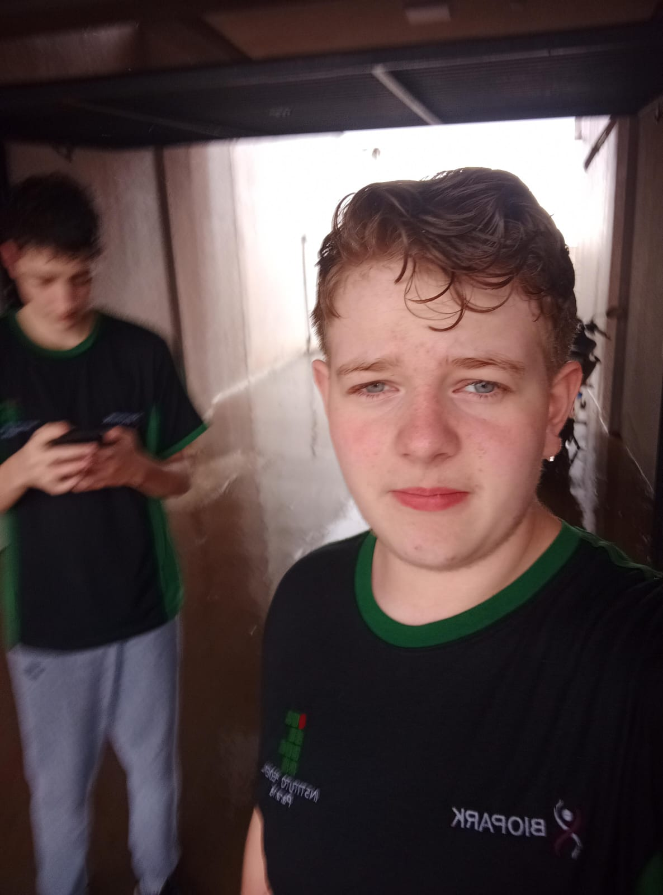
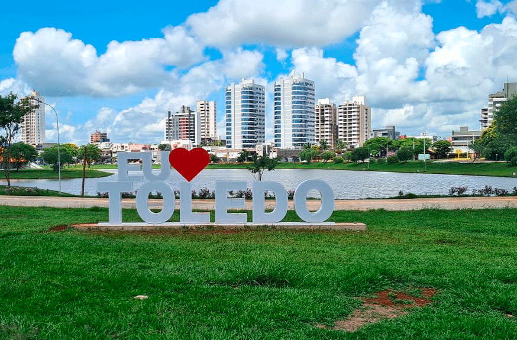

Photos


My journey, my city, and my goals.


My name is Eduardo Piesson Beppler. I am a member of Group 10 in the IFPR Integrated Project, and I live in Toledo, Paraná.
I am a student at the Federal Institute of Paraná. I have been building my educational journey through school experiences, spending time with classmates and teachers, and taking part in educational projects.
Taking part in the Integrated Project has given me the opportunity to develop my knowledge and better understand the relationship between education, economics, and society.
Toledo is located in western Paraná. Its economy is connected to agribusiness, agriculture, commerce, and services. Financial planning is important for families, rural producers, and small businesses in the region.
I currently study at IFPR and take part in an Integrated Project about financial and tax education. I plan to keep learning and gaining knowledge that can help me make personal and professional choices.